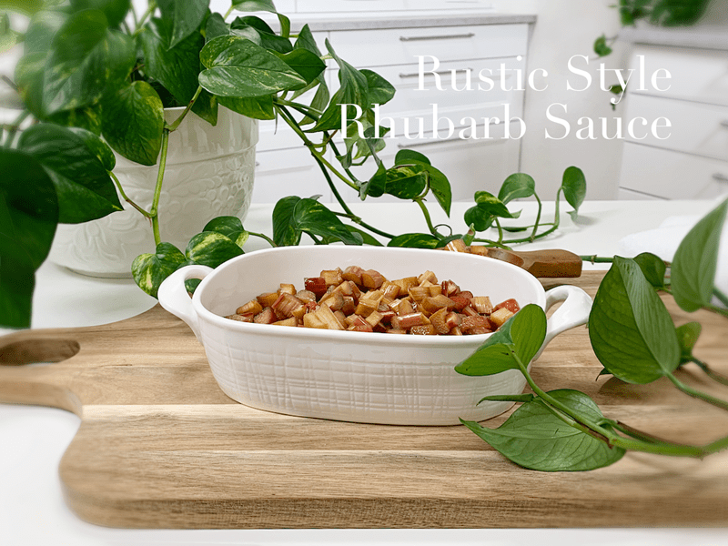
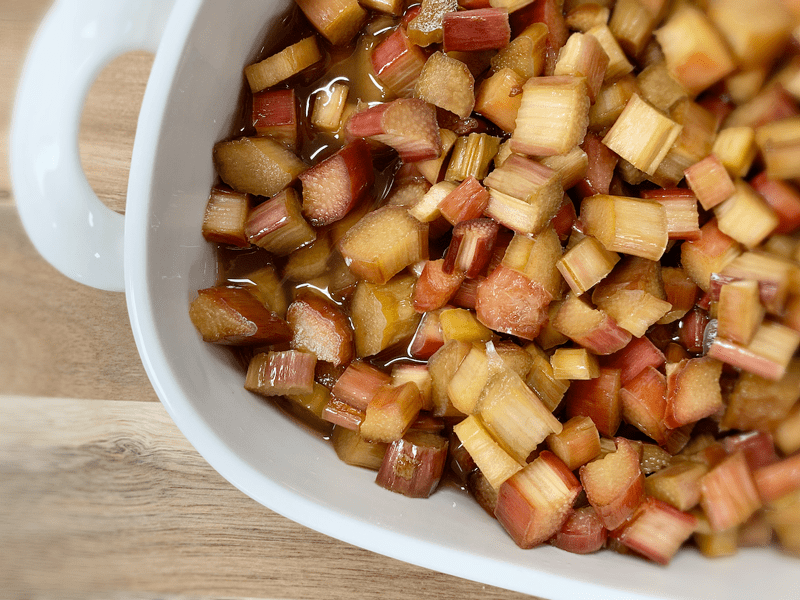

– raw, vegan, gluten-free, nut-free –
I never remember just how much I LOVE rhubarb sauce until I have it again. It had been years, well actually since introducing the raw diet into my lifestyle. I grew up canning the sauce with loads of white sugar. So as I was in the process of cleaning up my diet and my cupboards, out went the traditional rhubarb sauce that I grew up loving.

I am not quite sure what prompted me to try this recipe, other than I was overwhelmed with temptation while browsing through the produce department when I found myself staring at the rhubarb in a daze. Before I knew it, there was some riding in my cart. :) This simple recipe was an experiment, and one that I am very pleased with because it tastes exactly like what I remember as a child.
I did use maple syrup in this recipe which isn’t a raw sweetener. My reason for using this is that it is more alkalizing for the body. You can use raw agave nectar or coconut nectar if you wish.
What are the health benefits of Rhubarb?
Rhubarb is an excellent source of Vitamin C, which is essential to help support a healthy immune system. It is high in dietary fiber which helps to maintain regularity within the digestive system and is a good source of calcium which is essential for healthy bones and teeth. Rhubarb is low in sodium and saturated fat which makes it a delicious food to help prevent heart-related diseases. It is also high in Vitamin K, which is thought to help prevent diabetes. Do take note that the rhubarb leaves are toxic, so do not eat them.
 Ingredients:
Ingredients:
Yields 4 cups rhubarb & 1 1/2 cups syrup
- 8 cups sliced rhubarb (roughly 13 stalks)
- 1/2 cup maple syrup
Preparation:
- Wash and dry the rhubarb.
- Slice into 1/4″ slices, discard the leaves (they are toxic).
- Place the rhubarb and maple syrup in a ziplock bag, close, and shake, coating all the pieces.
- Pour everything into a glass container that will fit inside of the dehydrator, cover with plastic wrap, and slide the container into the bottom of the dehydrator. I use the Excalibur machine.
- Dehydrate at 115 degrees for 8 hours. The rhubarb will soften and create an extra sauce.
- The color will fade, and the bitterness of the rhubarb will soften.
- Use in recipes, eat alone, or blend into a sauce and scoop over ice cream or your favorite porridge.
- I like to blend half and stir in the chunky pieces for texture. Or blend it all into a sauce.
Culinary Explanations:
- When working with fresh ingredients, it is essential to taste test as you build a recipe. Learn why (here).
- Don’t own a dehydrator? Learn how to use your oven (here). I do, however honestly believe that it is a worthwhile investment. Click (here) to learn what I use.

© AmieSue.com